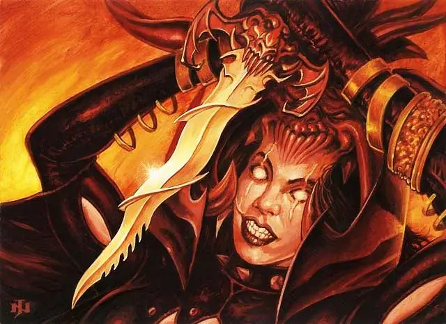

Ритуальный нож Ракдосов
Rakdos Riteknife
Оружие (кинжал), легендарное (требуется настройка)

Рекомендованная стоимость от 50 001 зм
Вы получаете бонус +1 к броскам атаки и урона, совершённым этим магическим оружием. Его лезвие сильно зазубрено, а рукоять напоминает демоническую голову и крылья. Всякий раз, когда вы убиваете существо атакой совершённой с помощью этого кинжала, душа существа заключается в кинжал и оно может быть возвращено к жизни только заклинанием исполнение желаний [wish]. Кинжал может вместить пять душ максимум.
За каждую душу, заключенную в кинжале, совершаемые им атаки наносят дополнительно 1к4 урона некротической энергией при попадании. Пока кинжал находится в пределах 5 футов от вас, ваши сны преследуют шепоты пойманных душ.
Кинжал обладает следующими дополнительными свойствами:
Сифон жизни. Бонусным действием вы можете освободить любое количество хранимых душ из кинжала, чтобы восстановить себе 1к10 хитов за каждую освобождённую душу.
Уничтожение. Если кинжал содержит пять душ, то вы можете использовать данное свойство:
Реакцией сразу после того, как вы попали по существу атакой этим кинжалом и нанесли ему урон, вы можете высвободить все пять душ. Если цель имеет меньше 75 хитов, она должна преуспеть в спасбросоке Телосложения Сл 15, иначе мгновенно умрёт. Если цель умирает, то вы не можете использовать это свойство снова, пока не закончите продолжительный отдых.